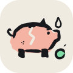

Movimento da Início
Como os componentes ganham vida, com calma. Cada quadro abaixo está em loop para dar para ver; no app, cada movimento toca uma vez, quando acontece.
- Calma. O movimento mostra o que mudou e de onde veio; nunca chama atenção à toa.
- Durações. Toques e trocas de aba: 120–200 ms. Entrada de cartões e folhas: 250–350 ms. Gráficos: 600–800 ms.
- Curva. Sai rápido e desacelera no fim (ease-out). Pulinho só em conquistas e na coruja.
- Uma vez. A entrada completa toca só na primeira abertura da Início na sessão. Trocar de período só troca os números.
- Dinheiro não gira. Valores aparecem com um esmaecer; nada de contador rodando, para não cansar nem parecer jogo.
- Aviso é sério. Alertas entram sem pulo, sem brilho e sem piscadinha.
- Acessível. Com "reduzir movimento" ligado no aparelho, tudo aparece direto, sem animação.
Previsão de saldoA linha se desenha da esquerda para a direita · 700 ms; o degradê aparece depois · 300 ms; o menor saldo salta
Próximos mesesBarras crescem da base, uma a cada 50 ms · 400 ms; a linha de 70% aparece no fim
Ritmo do períodoOs anéis dão a volta até o valor · 800 ms, desacelerando no fim
‹R$ 2.340,00R$ 410,00›
SobrouR$ 410,003º mês seguido

Livre para gastar−R$ 380,00